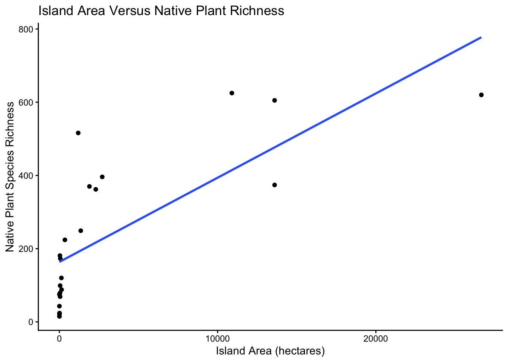
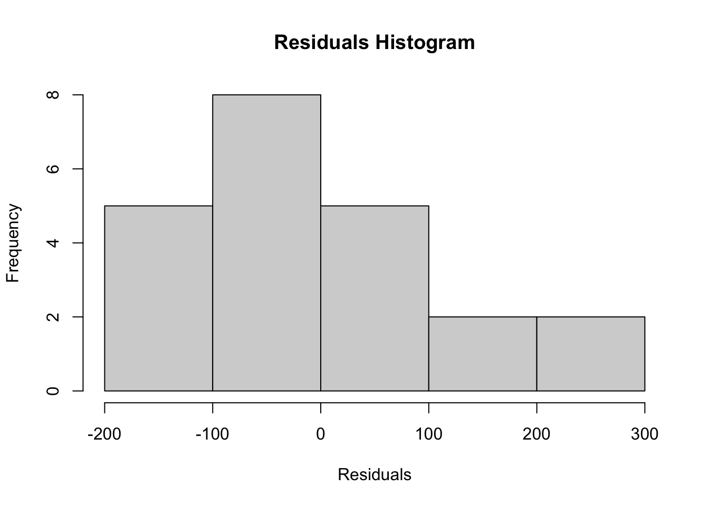
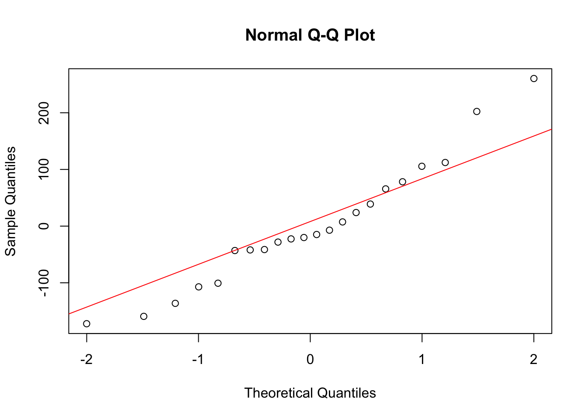
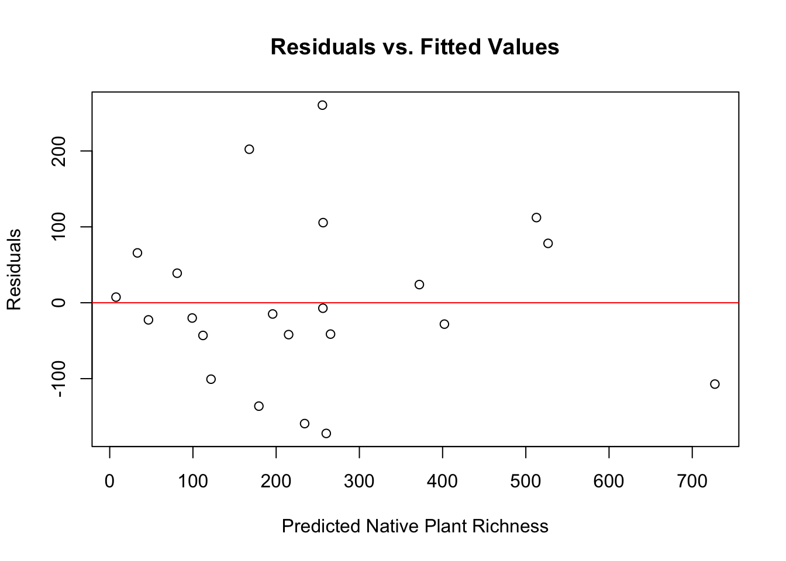

# Name - Queen's Student Number
# 1. Anna Goldfarb - 20455917BIOL343 Coding Challenge 7: Choosing among models
Group Members
DO THIS FIRST
Copy and paste these two lines into your R Console to install the current positpal, then restart R (Session → Restart R, or the restart button in the Console) before anything else. Do not include them as a code chunk.
install.packages("remotes")
remotes::install_url("https://quantitative.bio/downloads/positpal.tar.gz", upgrade = "never")After the restart, paste this line, replacing FILENAME.Rmd with the name you are going to use for the .R or .Rmd file you are going to upload (rename the template first, e.g. Group_#_CC7.Rmd, and use that exact name):
positpal::start("FILENAME.Rmd")Before you run it: create or open an R project folder for this challenge so that it is your working directory, then save this file in that folder under the name you will upload, and check that autosave is on (File → Auto Save). Closing the laptop or quitting Positron does not lose your log: when you reopen the project folder, positpal picks up where you left off and says so in the Console after your first command. Every time you open Positron to work on this file, run the start() line again, even if positpal says it picked up where you left off; it continues the same log and never erases it. See OnQ and use the positpal chatbot if you are having trouble with positpal.
Part 1 — Import
The data file is data/islands.csv: one row per island off the east coast of North America, with the number of native and non-native plant species and the physical and historical features of each island. The instructions describe the study, the variables and the hypotheses. Do not edit the file by hand.
So far you have tested one model at a time against a null hypothesis. This week you will compare several models, each representing a different hypothesis, and ask which one the data support best. You will work only with native species richness. Use the variables as they are in the file until the last task.
As in earlier challenges, the tasks tell you what to produce, not which function to use. The starter lines in some chunks are commented out so that the blank template knits; remove the # as you fill them in.
Import and inspect the data
Import the data as an object called islands, check its structure and count the missing values in each column. Use islands for the rest of the challenge.
islands <- read.csv("/Users/annagoldfarb/Desktop/BIOL343/BIOL343-CC/CC7/data/islands.csv")
str(islands)'data.frame': 22 obs. of 15 variables:
$ Island : chr "Appledore_Island" "Bear_Island" "Block_Island" "Cuttyhunk_Island" ...
$ tot.rich : int 182 64 661 311 920 390 633 34 107 641 ...
$ ntv.rich : int 79 43 396 173 516 249 374 15 75 370 ...
$ nonntv.rich : int 103 21 265 138 404 141 259 19 32 271 ...
$ pct.nonntv : int 57 33 40 44 44 36 41 56 30 42 ...
$ area : int 40 3 2707 61 1190 1350 13600 4 4 1900 ...
$ latitude : num 43 41.2 41.2 41.4 41.3 ...
$ elev : int 18 13 64 46 40 37 122 10 10 165 ...
$ dist.mnland : num 10 0.3 20.6 10.8 2.7 6.7 17.5 13.2 1.9 22.9 ...
$ dist.island : num 10 0.3 20.6 0.4 2.7 6.7 17.5 1 0.3 8.1 ...
$ soil.types : int 6 1 59 11 35 37 NA NA 1 21 ...
$ years.isol : int 7000 3800 10000 4700 7200 5000 14000 11800 8800 7500 ...
$ years.deglac: int 12640 15000 15000 14900 15000 14950 14000 11800 15000 13250 ...
$ human.pop : int 0 0 1010 86 289 0 2757 0 0 79 ...
$ human.dens : num 0 0 0.37 1.41 0.24 0 0.2 0 0 0.04 ...colSums(is.na(islands)) Island tot.rich ntv.rich nonntv.rich pct.nonntv area
0 0 0 0 0 0
latitude elev dist.mnland dist.island soil.types years.isol
0 0 0 0 4 0
years.deglac human.pop human.dens
0 0 0 Question 1: Which column has missing values, and how many? Compare the median and the maximum of each numeric column: which of the variables in the hypotheses have a few values far larger than most of the others?
Answer: The column “soil.types” has 4 missing values. The variables “area”, “elev”, “human.pop”, and “human.dens” have a few values far larger than most others.
Part 2 — Goodness of fit
R² as a measure of fit
Plot native richness (y) against island area (x) with a fitted straight line, axis labels and a clean theme. Fit a linear model of native richness with area as the only predictor, and print the summary. Calculate the model’s R² yourself from the predicted and observed values. Then fit a second model with all six predictors from the hypotheses (area, elevation, distance from the mainland, latitude, years since isolation and years since deglaciation) and print its summary.
library(tidyverse)Warning: package 'ggplot2' was built under R version 4.5.2Warning: package 'tibble' was built under R version 4.5.2Warning: package 'tidyr' was built under R version 4.5.2Warning: package 'readr' was built under R version 4.5.2Warning: package 'purrr' was built under R version 4.5.2Warning: package 'dplyr' was built under R version 4.5.2Warning: package 'lubridate' was built under R version 4.5.2ggplot(islands, aes(x=area, y=ntv.rich)) + geom_point() + geom_smooth(method=lm, se=FALSE) + labs(x="Island Area (hectares)", y="Native Plant Species Richness", title="Island Area Versus Native Plant Richness") + theme_classic()
area_mod <- lm(ntv.rich ~ area, data=islands)
summary(area_mod)
Call:
lm(formula = ntv.rich ~ area, data = islands)
Residuals:
Min 1Q Median 3Q Max
-157.36 -100.89 -56.15 109.86 324.98
Coefficients:
Estimate Std. Error t value Pr(>|t|)
(Intercept) 1.636e+02 3.384e+01 4.836 1e-04 ***
area 2.301e-02 4.545e-03 5.064 5.94e-05 ***
---
Signif. codes: 0 '***' 0.001 '**' 0.01 '*' 0.05 '.' 0.1 ' ' 1
Residual standard error: 141.1 on 20 degrees of freedom
Multiple R-squared: 0.5618, Adjusted R-squared: 0.5399
F-statistic: 25.64 on 1 and 20 DF, p-value: 5.94e-05observed <- islands$ntv.rich
predicted <- predict(area_mod)
SSres <- sum((observed - predicted)^2)
SStot <- sum((observed - mean(observed))^2)
all_mod <- lm(ntv.rich ~ area + elev + dist.mnland + latitude + years.isol + years.deglac, data=islands)
summary(all_mod)
Call:
lm(formula = ntv.rich ~ area + elev + dist.mnland + latitude +
years.isol + years.deglac, data = islands)
Residuals:
Min 1Q Median 3Q Max
-172.19 -42.80 -17.46 59.00 260.40
Coefficients:
Estimate Std. Error t value Pr(>|t|)
(Intercept) 2.945e+03 4.065e+03 0.725 0.4798
area 2.074e-02 8.683e-03 2.388 0.0305 *
elev 4.631e-01 6.756e-01 0.685 0.5035
dist.mnland 2.140e+00 2.400e+00 0.892 0.3867
latitude -7.046e+01 7.615e+01 -0.925 0.3695
years.isol 1.045e-02 1.645e-02 0.635 0.5349
years.deglac 6.262e-03 7.158e-02 0.087 0.9314
---
Signif. codes: 0 '***' 0.001 '**' 0.01 '*' 0.05 '.' 0.1 ' ' 1
Residual standard error: 128.5 on 15 degrees of freedom
Multiple R-squared: 0.7274, Adjusted R-squared: 0.6184
F-statistic: 6.671 on 6 and 15 DF, p-value: 0.001362Question 2: Does your R² match the one in the summary? The six-predictor model has a higher R² than the area model. Does that mean it is a better model? What does the adjusted R² do differently?
Answer: Yes, my R² matches the one in the summary, but this does not necessarliy mean it is a better model. The adjusted R² uniquely accounts for the number of predictors relative to sample size.
Comparing nested models with ANOVA
Hypothesis 1 says native richness depends on island area and elevation but not on distance from the mainland. Fit a model with area, elevation and distance from the mainland as predictors (the hypothesis 1 model). Use an ANOVA to test whether it fits the data better than the model with area alone.
h1_mod <- lm(ntv.rich ~ area + elev + dist.mnland, data=islands)
summary(h1_mod)
Call:
lm(formula = ntv.rich ~ area + elev + dist.mnland, data = islands)
Residuals:
Min 1Q Median 3Q Max
-153.89 -107.49 -54.30 94.96 337.94
Coefficients:
Estimate Std. Error t value Pr(>|t|)
(Intercept) 154.900823 60.992354 2.540 0.0205 *
area 0.026365 0.009269 2.844 0.0108 *
elev -0.257595 0.649489 -0.397 0.6963
dist.mnland 0.772537 2.686386 0.288 0.7770
---
Signif. codes: 0 '***' 0.001 '**' 0.01 '*' 0.05 '.' 0.1 ' ' 1
Residual standard error: 147.3 on 18 degrees of freedom
Multiple R-squared: 0.5702, Adjusted R-squared: 0.4985
F-statistic: 7.959 on 3 and 18 DF, p-value: 0.001381anova(area_mod, h1_mod)Analysis of Variance Table
Model 1: ntv.rich ~ area
Model 2: ntv.rich ~ area + elev + dist.mnland
Res.Df RSS Df Sum of Sq F Pr(>F)
1 20 397957
2 18 390345 2 7612.1 0.1755 0.8404Question 3: Why are these two models nested? Which is the full and which the reduced model? Does adding elevation and distance from the mainland improve the fit more than expected by chance? What does that say about hypothesis 1?
Answer: The models are nested because area_mod contains a subset of the predictors in h1_mod. Therefore, the reduced model is area_mod and the full model is h1_mod. Adding elevation and distance does not significantly improve fit more that what is expected by chance. This means that hypothesis 1 is partially supported, as plant richness increases with area and distance from mainland has no significant effect on this, but plant richness does not increase with elevation.
Part 3 — Likelihood
The likelihood ratio test
Compare the same two models with a likelihood ratio test. Then calculate the test statistic and its p-value yourself from the two log-likelihoods.
library(lmtest)Loading required package: zoo
Attaching package: 'zoo'The following objects are masked from 'package:base':
as.Date, as.Date.numericlrtest(area_mod, h1_mod)Likelihood ratio test
Model 1: ntv.rich ~ area
Model 2: ntv.rich ~ area + elev + dist.mnland
#Df LogLik Df Chisq Pr(>Chisq)
1 3 -139.05
2 5 -138.84 2 0.4249 0.8086lglk_area <- as.numeric(logLik(area_mod))
lglk_h1 <- as.numeric(logLik(h1_mod))
lrStat <- 2*(lglk_h1 - lglk_area)
lrStat[1] 0.4248943DegFreeDiff <- attr(logLik(h1_mod), "df") - attr(logLik(area_mod), "df")
p <- pchisq(lrStat, df=DegFreeDiff, lower.tail=FALSE)
p[1] 0.8086031Question 4: What do the #Df values (3 and 5) count? Compare the p-values from the LRT and the ANOVA. Do the two tests reach the same conclusion? Why are they not exactly the same?
Answer: The #Df values count the estimated model parameters (3 for area_mod and 5 for h1_mod). The p-values reach the same conclusion, but are slightly different because the LRT used a chi-squared while the ANOVA used an F-distribution.
Part 4 — Information criteria
Five competing hypotheses
Hypothesis 2 says native richness depends on the islands’ history: years since deglaciation, latitude and years since isolation. Fit the hypothesis 2 model and an intercept-only (null) model. Then compare the five models you now have (null, area, hypothesis 1, hypothesis 2, all six predictors) with AIC, AICc and BIC. For the model with the lowest AICc, calculate how many times more likely it is than each of the other four.
h2_mod <- lm(ntv.rich ~ years.deglac + latitude + years.isol, data=islands)
null_mod <- lm(ntv.rich ~ 1, data=islands)
AICc <- function(model) {K <- attr(logLik(model), "df")
n <- nobs(model)
AIC(model) + (2 * K * (K + 1)) / (n - K - 1)}
models <- list(null_mod, area_mod, h1_mod, h2_mod, all_mod)
compare <- data.frame(Model = c("Null", "Area", "H1", "H2", "All"), AIC = sapply(models, AIC), AICc = sapply(models, AICc), BIC = sapply(models, BIC))
compare Model AIC AICc BIC
1 Null 300.2514 300.8830 302.4335
2 Area 284.1005 285.4339 287.3737
3 H1 287.6756 291.4256 293.1309
4 H2 295.1769 298.9269 300.6321
5 All 283.6564 294.7333 292.3847Question 5: Which model is best by AIC, by AICc and by BIC? Using the rules of thumb (a difference under 2 means equivalent, over 6 means clearly worse), which models are equivalent to the best one by AICc and which are clearly worse? Why does AICc disagree with AIC here? Which hypothesis is best supported, and what does the hypothesis 2 model tell you on its own?
Answer: The model all_mod is best by AIC, and the area_mod model is the best by AICc and BIC. No other models are equal to area_mod. The models null_mod, h2_mod, and all_mod are clearly worse. Unlike AIC, AICc accounts for model complexity and favours models with less predictors. Hypothesis 1 is best supported (partially, see Question 3) and the hypothesis 2 model tells that historical factors poorly explain native plant species richness.
Missing values
Hypothesis 1 leaves out the number of soil types, which might also affect native richness. Fit a model with area and the number of soil types as predictors, and compare its AIC with the area-only model. Check how many islands each model used. Then make a dataset with only the islands that have no missing values in the columns you need, refit both models to it, and compare them again with AIC, AICc and a likelihood ratio test.
soil_mod <- lm(ntv.rich ~ area + soil.types, data=islands)
AIC(area_mod, soil_mod)Warning in AIC.default(area_mod, soil_mod): models are not all fitted to the
same number of observations df AIC
area_mod 3 284.1005
soil_mod 4 227.8375nobs(area_mod)[1] 22nobs(soil_mod)[1] 18islands_complete <- islands[complete.cases(islands[, c("ntv.rich", "area", "soil.types")]),]
area_mod2 <- lm(ntv.rich ~ area, data=islands_complete)
soil_mod2 <- lm(ntv.rich ~ area + soil.types, data=islands_complete)
AIC(area_mod2, soil_mod2) df AIC
area_mod2 3 233.9369
soil_mod2 4 227.8375lrtest(area_mod2, soil_mod2)Likelihood ratio test
Model 1: ntv.rich ~ area
Model 2: ntv.rich ~ area + soil.types
#Df LogLik Df Chisq Pr(>Chisq)
1 3 -113.97
2 4 -109.92 1 8.0994 0.004428 **
---
Signif. codes: 0 '***' 0.001 '**' 0.01 '*' 0.05 '.' 0.1 ' ' 1Question 6: Before you removed the missing values, which model looked better by AIC, and by how much? Why was that comparison wrong? After the fix, does the number of soil types improve the model? What did removing the missing values cost?
Answer: Before removing the missing values, soil_mod looked better by AIC by 56.26 compared to area_mod. The comparison was wrong because each model was using a different number of observations. After the fix, the number of soil types significantly improves the model. Removing the missing values cost 18.2% of the observations (22 to 18) so statistical power is reduced.
Part 5 — Checking the models
Residuals, transformation and one-step reanalysis
Do this on the untransformed data first: run your chunks (or render to HTML) and look at the results. Check whether the six-predictor model meets the assumptions about its residuals: plot a histogram of the residuals, a Q-Q plot of the residuals, and the residuals against the predicted values. Look at the distributions of the response and the predictors too. Decide which variables to transform. Make the change once, in the chunk of the first task, so that the transformed values replace the originals and every model, test and table below uses them without being edited. Update any axis titles that the change makes wrong. Then knit again. Do not rewrite your answers to Questions 2–6: they describe the untransformed analysis.
hist(residuals(all_mod), main="Residuals Histogram", xlab="Residuals")
qqnorm(residuals(all_mod))
qqline(residuals(all_mod), col="red")
plot(fitted(all_mod), residuals(all_mod), xlab="Predicted Native Plant Richness", ylab="Residuals", main="Residuals vs. Fitted Values")
abline(h=0,col="red")
var <- c("ntv.rich", "area", "elev", "dist.mnland", "latitude", "years.isol", "years.delac")Question 7: Which variables did you transform, and what in the plots told you to? Compare the untransformed and transformed results: what changed in the fit of the models, in which model AIC, AICc and BIC choose, and in your conclusion about soil types? How long did it take to redo the whole analysis, and what would it have taken if you had done each step by hand (for example, copying numbers into a spreadsheet or typing them into your answers)?
Answer:
DO THIS LAST
When your document is finished, knit it, open the .html in a web browser and print it to PDF (File → Print → Save as PDF; name it Group_#_CC7.pdf). Then copy and paste this into the R Console to stop positpal and create your coding log. Do not include it as a code chunk.
positpal::stop_capture()
positpal::export_capture()export_capture() prints the name and location of the my-capture-YYYYMMDD-HHMMSS.zip it creates beside this file. Each group member uploads their own .zip to the “CC7 — Coding Log (individual)” dropbox on OnQ; the group’s .Rmd, .html and .pdf (OnQ shows uploaded HTML as source code, so the PDF is what gets graded; the .html is a back-up) go to your section’s TUT02-CC7 or TUT03-CC7 folder. Submissions without the log are incomplete. If export_capture() fails, zip the .capture folder yourself and upload that instead.